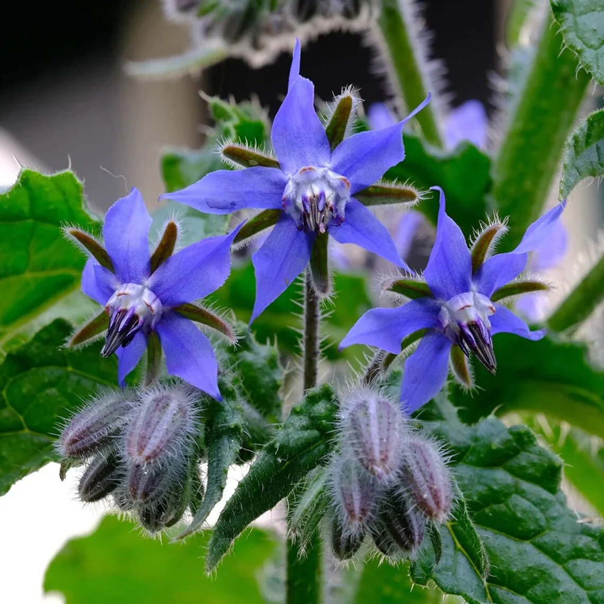
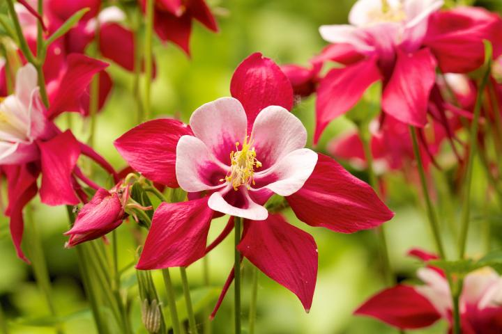
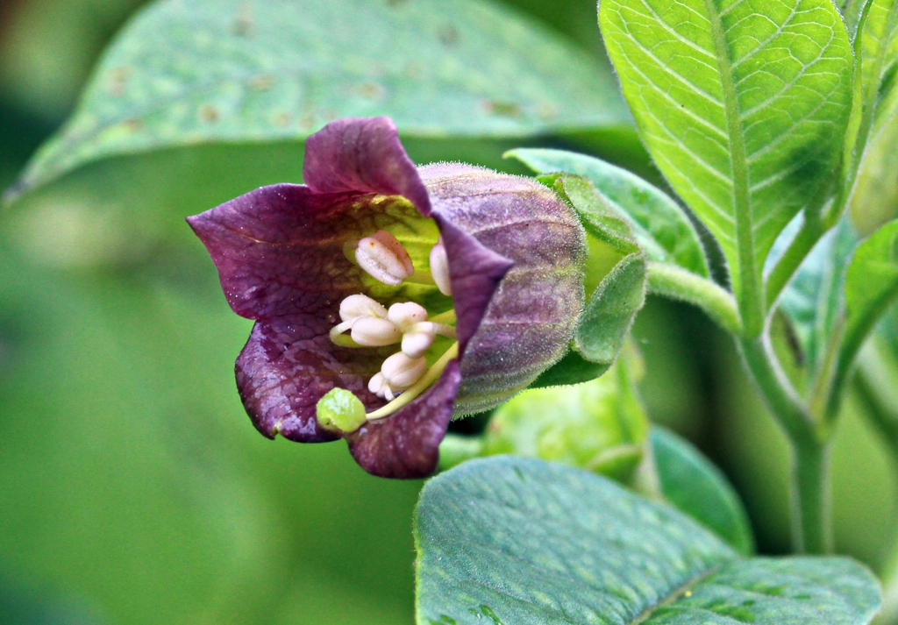
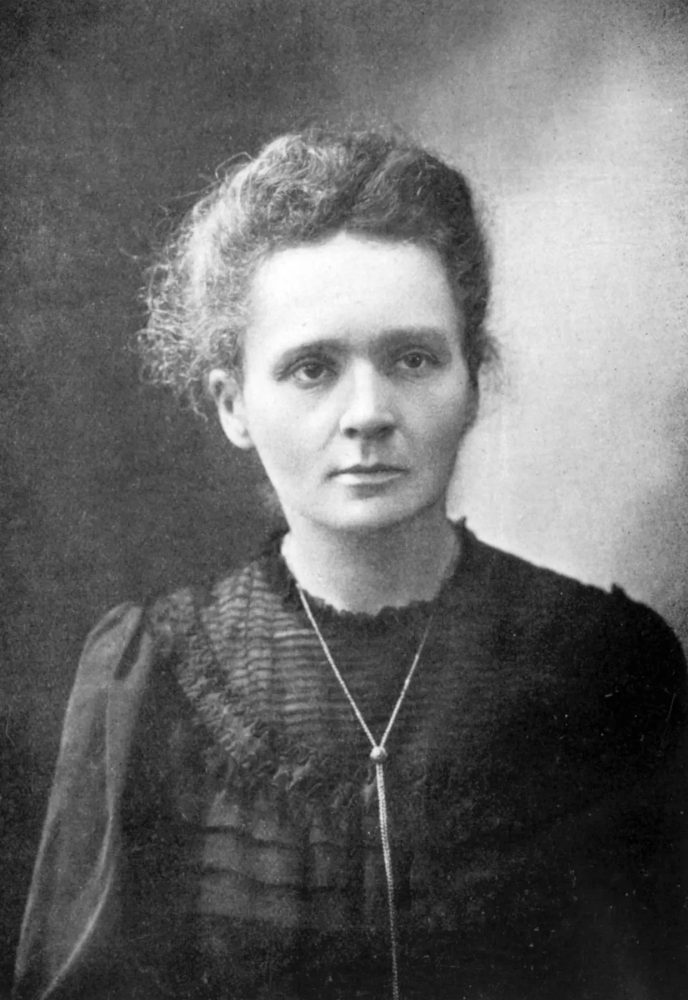
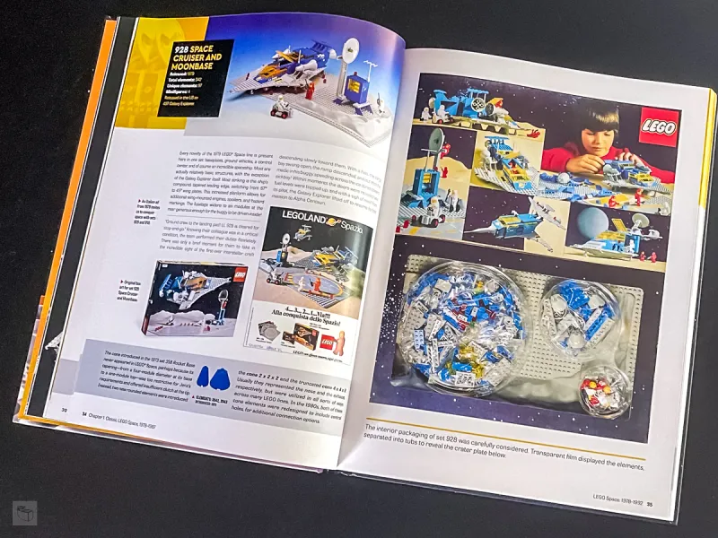
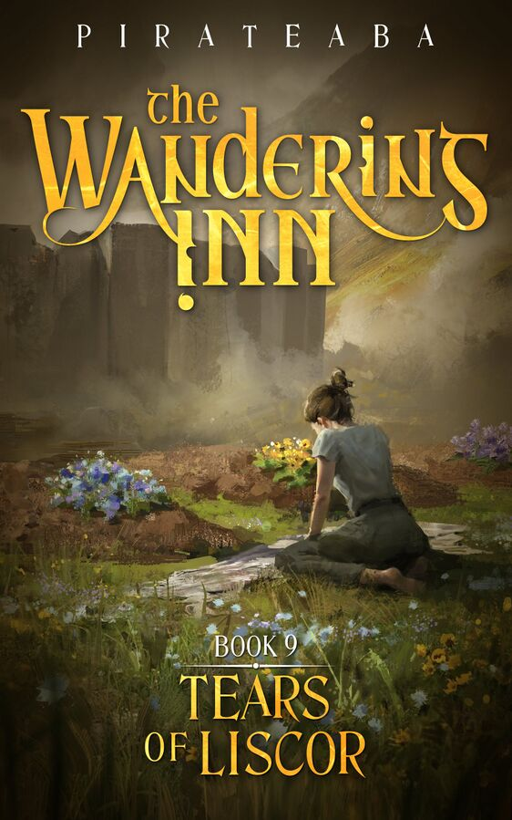

Dominican Republic

Borage- bluntness
Red Columbine- anxiety
Belladonna- silence
Marie Curie
Albert Einstein

Hashbrown casserole- straightforward to prepare, all about comfort food
I have an avid interest in something, an idea (or structure) that I can follow, and the means to build something with it
If I had to choose one topic to talk about for the rest of my life, it would be fantasy, because it's what I enjoy in my free time, and it's broad enough to have a lot of different things to talk about.
